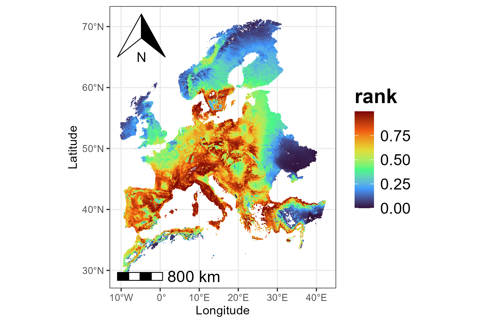
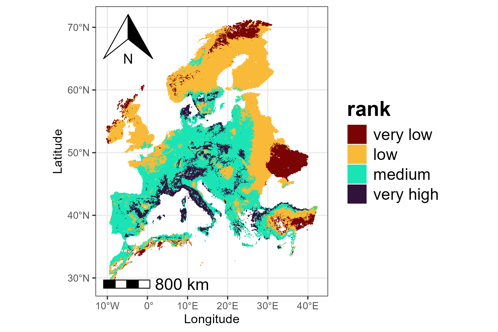
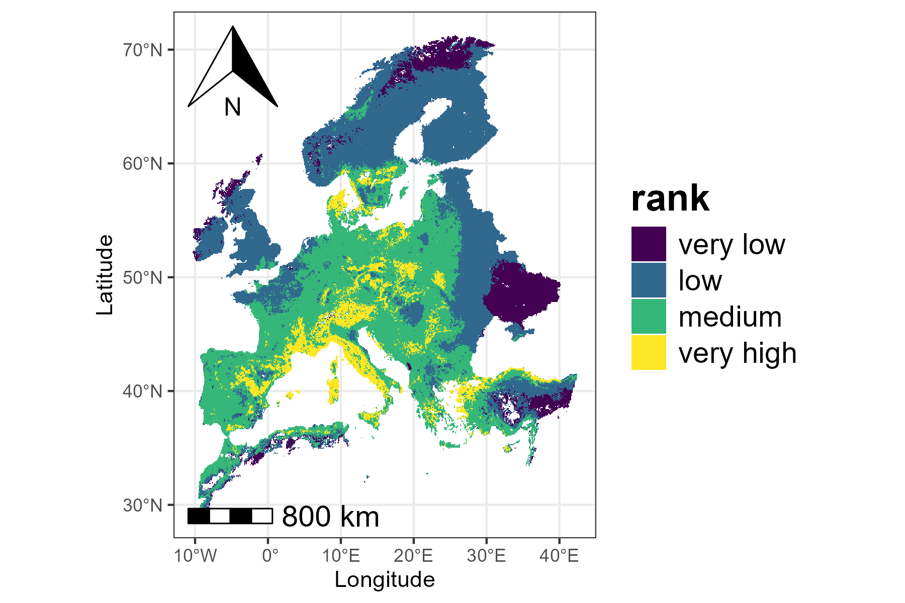
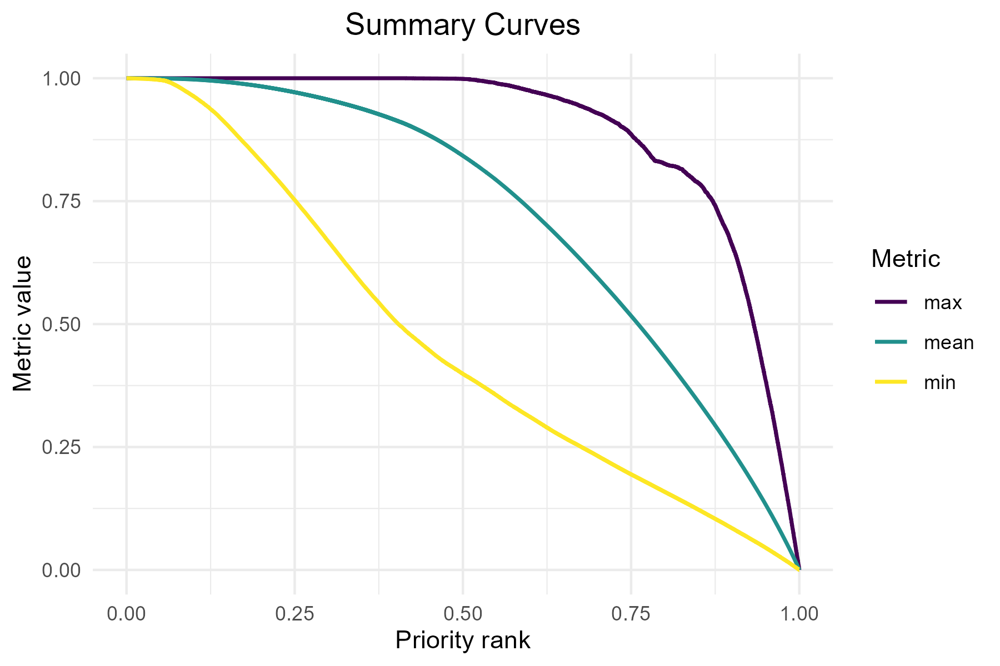
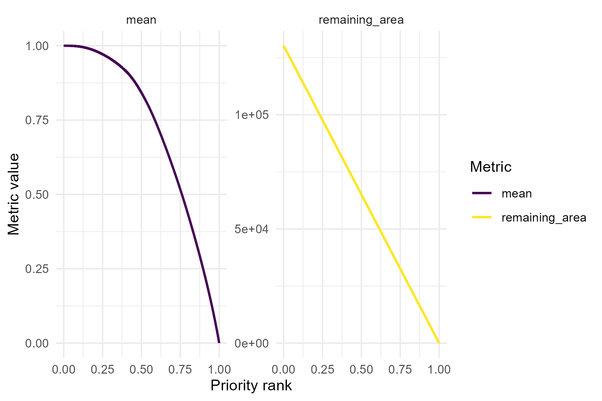
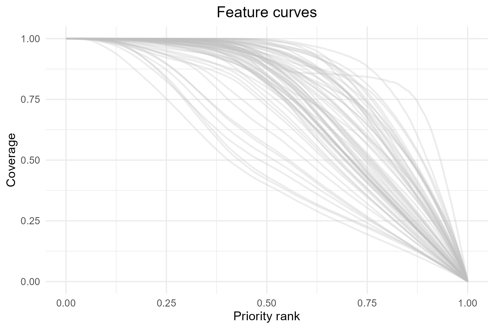
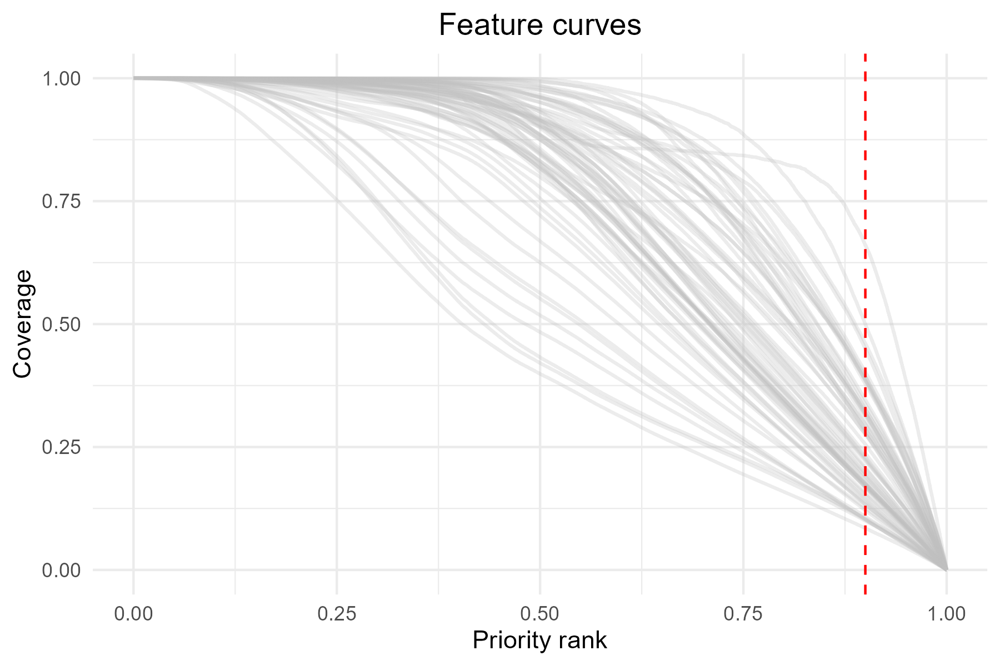
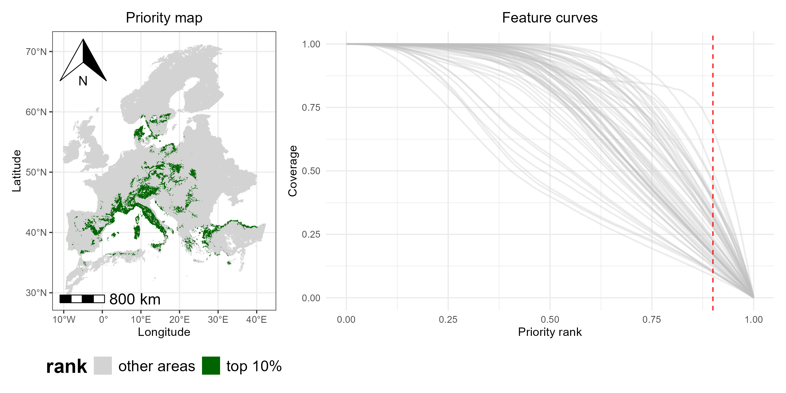
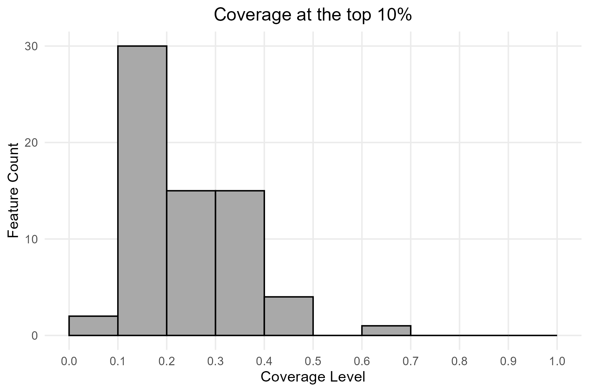
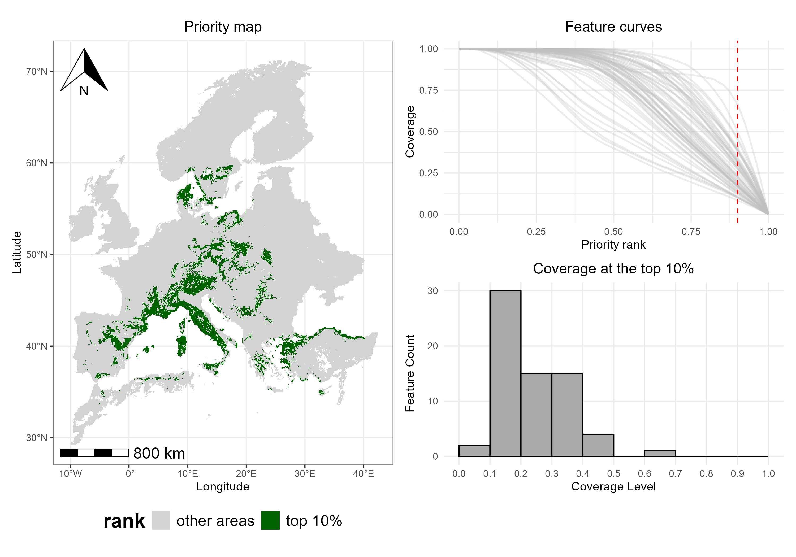

This vignette demonstrates how to explore and interpret some of the main outputs generated by Zonation using the ZonationR package. Specifically, users will:
- Examine spatial patterns of conservation priorities.
- Inspect performance curves.
- Assess the distribution of feature coverage.
Setup
Installation
# Install these packages if not already installed
if (!require(ggplot2)) install.packages("ggplot2")
if (!require(patchwork)) install.packages("patchwork")Prepare input data
Here, we use the baseline variant output folder from the vignette Variants worflow to illustrate some of the post-processing functions. You can either use the output folder data provided by the Zonation5RData package, as shown below, or, if you are following the multiple variants tutorial, you can use any output folder from there.
# Create a folder to store the input data
dir.create("01_baseline", showWarnings = FALSE)
# Get the paths to the files
files_output <- zonation5rdata_list("01_baseline", full.names = TRUE)
# Copy to the local folder
file.copy(files_output, "01_baseline", overwrite = TRUE)
# Define a variable for the baseline folder
baseline_folder <- "01_baseline"Priority map
One of the main outputs of Zonation is the priority rank map, which
shows the conservation priority of each cell across the landscape.
Higher numbers indicate areas that are more important for conservation,
while lower numbers indicate areas of lower priority. Each rank value
tells you how a cell compares to others in terms of conservation
priority. But please note that the scale is relative, not
absolute. For example, a cell ranked 0.8 is not twice as
valuable as one ranked 0.4. The priority map should then be considered
together with other outputs, like performance curves, to fully
understand the spatial distribution of conservation value, potential
trade-offs, and the conservation effectiveness. We can use the
priority_map() function to visualize the ranking values
across the landscape:
p1 <- priority_map(baseline_folder)
print(p1)
In addition to visualizing the continuous priority values, we can
also adjust the map to make important areas stand out more clearly. The
classify argument in priority_map() allows
choosing whether to display the map as continuous or divided into
classes. If classify = TRUE, the map is divided into
discrete classes, and we can define custom breaks and labels to make it
easier to see which areas have higher or lower priority.
breaks <- c(0, 0.1, 0.5, 0.9, 1)
labels <- c("very low", "low", "medium", "very high")
p2 <- priority_map(baseline_folder, classify = TRUE,
breaks = breaks, labels = labels)
print(p2)
The visualization functions in ZonationR return
ggplot2 objects, which means that users can further
customize the plots using the ggplot2 ecosystem. For
example, we can apply a different color palette to the map:
p2 <- p2 + scale_fill_viridis_d() + labs(fill = "rank")
print(p2)
Performance curves
The performance curves describe how much of each feature’s
distribution would be covered if we protected grid cells following their
priority rank order. The summary_curves() function is
helpful for understanding the overall performance of a solution. It
allows us to explore key metrics such as:
-
mean - average performance across all species
-
max - performance of the best-performing
species
- min - performance of the worst-performing species
p3 <- summary_curves(baseline_folder, metrics = c("mean", "max", "min")) +
ggtitle("Summary Curves") +
theme(plot.title = element_text(hjust = 0.5))
print(p3)
We can also visualize additional metrics from the summary curves file
using separate panels (facets). The facet argument should
be set to TRUE when plotting metrics that have different
units or value ranges.
p4 <- summary_curves(baseline_folder,
metrics = c("remaining_area", "mean"),
facet = TRUE)
print(p4)
Besides looking at overall performance with
summary_curves(), one could also be interested in how each
feature is represented across the priority ranking, which can be
explored using the feature_curves() function:
p5 <- feature_curves(baseline_folder) +
ggtitle("Feature curves") +
theme(plot.title = element_text(hjust = 0.5))
print(p5)
As with priority_map(), the functions
summary_curves() and feature_curves() return
ggplot2 objects, allowing further customization of the
plots. For example, we can add a vertical line to highlight the top 10%
(rank = 0.9) priority cells.
p5 <- p5 + geom_vline(xintercept = 0.9, linetype = "dashed", color = "red")
print(p5)
The vertical line at 0.9 represents the top 10% priority areas. Intersection with the curves shows the proportion of each feature representation within these areas.
As mentioned earlier, priority rank maps and performance curves
should be interpreted together. For example, we could use the
priority_map() function to plot a classified map showing
only the top 10% priority areas, alongside the corresponding feature
curves.
# Define the threshold for the top 10% priority cells
threshold <- 0.90
# Define breaks and labels for classified map
breaks <- c(0, 0.90, 1) # 0-90% = other areas, 90-100% = top 10%
labels <- c("other areas", "top 10%")
# Plot the classified map with two colors
top10_map <- priority_map(
baseline_folder,
classify = TRUE,
breaks = breaks,
labels = labels
) +
scale_fill_manual(values = c("lightgray", "darkgreen")) +
ggtitle("Priority map") +
theme(plot.title = element_text(hjust = 0.5),
legend.position = "bottom") +
labs(fill = "rank")
# Combine map and feature curves
p1_combined <- top10_map + p5
print(p1_combined)
By combining the classified map and the feature curves side by side, we can see which areas are top-priority and how well each species is represented within those areas (i.e., the curves intersecting the red dashed line), providing a integrated view of spatial priorities and species coverage.
Coverage distribution
In addition to maps and performance curves, we can also explore the
coverage distribution for any selected priority fraction using the
function coverage_distribution(). The histogram shows, for
each coverage level (or coverage bin) on the x-axis, the number of
species reaching that coverage level (y-axis). For example, a bar
reaching 30 on the y-axis at the coverage range 0.1-0.2 means that 30
species have between 10% and 20% of their range included in the selected
priority fraction.
p6 <- coverage_distribution(baseline_folder, target_rank = 0.9) +
ggtitle("Coverage at the top 10%") +
theme(plot.title = element_text(hjust = 0.5))
print(p6)
An overview of Zonation results can be created by combining maps and other outputs.
p2_combined <- top10_map + p5 / p6
print(p2_combined)
Key takeaways
By looking at the combined visualization, we can see which areas are
top-priority (map), how well each species is
represented in those areas (feature curves), and the
number of species at different coverage levels
(histogram). This provides a full view of spatial
priorities and feature-level coverage, illustrating how
ZonationR allows users to explore and interpret conservation
outcomes in a flexible and straightforward way.